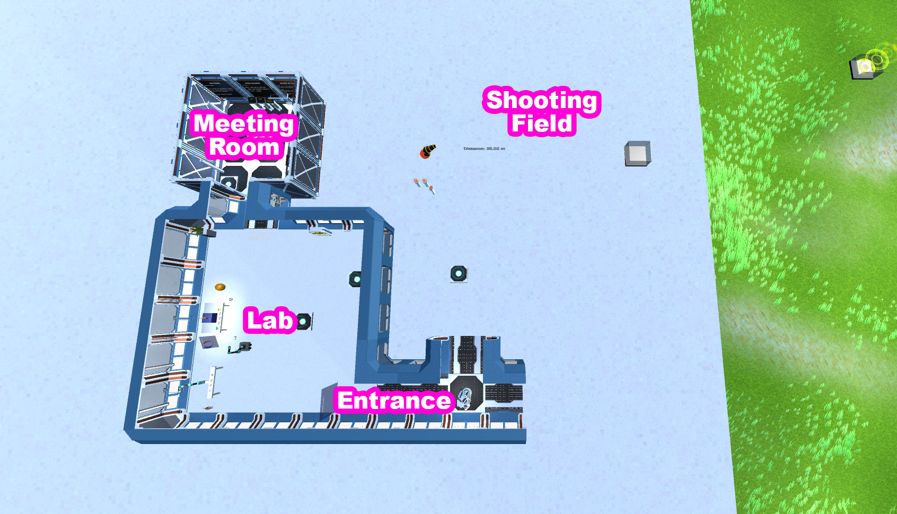
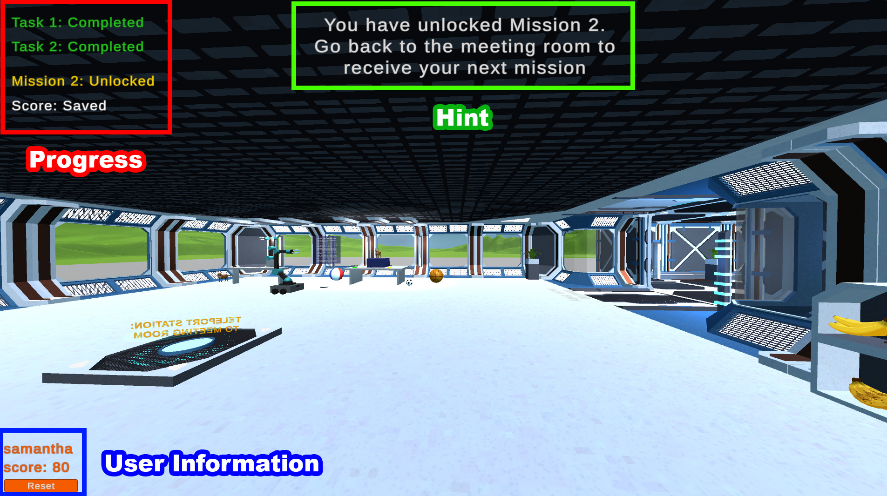
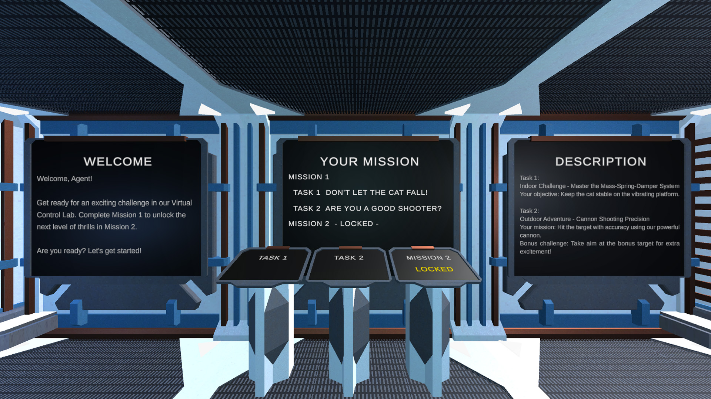

Tutorial
Guidelines
Map
There are 3 main areas in this game.
- Meeting Room: Receiving your mission information
- Lab: Conducting indoor experiment
- Shooting Field: Conducting outdoor physics experiment

Navigation
- To navigate through our virtual world, use the W, A, S, and D keys on your keyboard.
- When you need to leap over obstacles, press the Space bar to jump.
- For a swift spin, hold down the right button of your mouse.
- To teleport to different locations, walk to the teleport station and click on it.
User Interface
We provide an user-friendly interface.
- The user progress is displayed on the top left corner (Red Box).
- Hint for the next step is displayed on the top bar (Green Box).
- The user information is displayed on the bottom left corner (Blue Box).

Missions
There are 2 missions in this game.
- Mission 1: Apply your knowledge to the game.
- Task 1: Don't let the cat fall!
- Task 2: Are you a good shooter?
- Mission 2: Complete Mission 1 to unlock Mission 2.

Task 1: Don't Let the Cat Fall!
Indoor Challenge - Master the Mass-Spring-Damper System Your mission: Save the cat from falling using the control theory you've learned in class. Adjust the amplitude, frequency, and damping effect using the +/- buttons. Press Start to initiate the vibration with your selected settings. Once the vibration nears a stop and the cat remains standing, it's your cue to submit your settings!

Task 2: Are you a good shooter?
Outdoor Adventure - Cannon Shooting Precision Your mission: Hit the target with accuracy using our powerful cannon. Bonus challenge: Take aim at the bonus target for extra excitement! Hint: Hit the target to unlock the valve for adjusting the base angle.

Mission 2
When you have completed Mission 1, come back to the Meeting Room to receive your next mission.